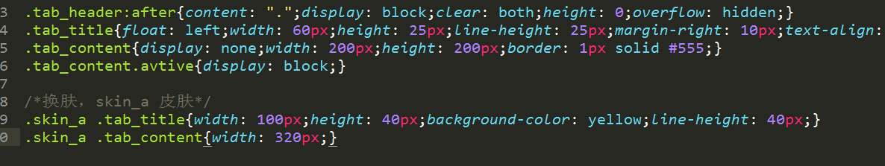

options.items : Array
数据格式：[{title:"title1",content:"content1"},{title:"title2",content:"content2"},{title:"title3",content:"content3"},...]
options.eventType : String
触发选项卡切换的事件名称,取值click或mouseover，默认click
options.selectDelay : Number
当selectEvent是mouseover时，选项卡之间切换的延迟时间，以毫秒为单位，默认0
options.defaultIndex : Number
默认选项卡的打开项，默认0
options.skinClassName : String
给选项卡更换样式的类名，默认为""，写法请参考tab.css文件
render
将Tab选择卡渲染到指定的容器中
target: {HTMLElement}
一个用来渲染组件的容器对象.
select
切换到某个选项卡
index: {Number}
选项卡的索引，初始值是0.
getCurrentTitle
获得当前选项卡的标题
返回值: {String}
取得当前选中项的标题.
getCurrentContent
获得当前选项卡的内容
返回值: {String}
取得当前选中项的内容.
onbeforeselect
当焦点发生改变之前触发该事件
参数1: {String}
自定义的事件类型.
参数2: {Function}
促发事件后调用的函数.
onafterselect
当焦点发生改变之后触发该事件
参数1: {String}
自定义的事件类型.
参数2: {Function}
促发事件后调用的函数.